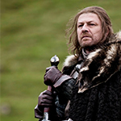

The Starks of Winterfell
Eddard Stark
| 
|
Eddard was fostered by Lord Jon Arryn at the Eyrie from the age of eight, alongside Robert Baratheon.[7] Ned befriended Robert and came to consider Lord Arryn a second father. Ned's father and brother were executed at the command of King Aerys II, who further demanded that Arryn send him the heads of his wards. Arryn refused and instead launched a rebellion. With his father and brother dead, Ned, now Lord of Winterfell, rallied the North in rebellion. At the beginning of the rebellion, Eddard had a fisherman try to sneak him from the Vale to White Harbour, so he could raise his forces in the North, but due to storms the fisherman died and his daughter was only able to get him to Sweetsister. Lord Borrell later snuck him into White Harbour. Before marching to aid Robert, who was warring in the south, Ned married Catelyn Tully, who had been betrothed to Ned's brother Brandon before his death.[8] At the tail end of the rebellion, Ned, along with six of his companions, traveled to the Dornish border to find the Tower of Joy, where Prince Rhaegar Targaryen had hidden his sister Lyanna. It was guarded by three members of the Kingsguard, including Ser Arthur Dayne. The resulting skirmish saw the deaths of all but Ned and Howland Reed. Unfortunately, Lyanna had died shortly after the battle, a moment that haunted Ned ever since. Once the conflict had ended and Robert had taken the throne, Ned returned home, bringing with him a bastard son, Jon, about whose origins he refused to speak, even to his own wife; he quickly silenced rumors that the boy's mother was the Dornish noblewoman Ashara Dayne.[7] Godric Borrell claims that the daughter of the fisherman who sneaked Ned to Sweetsister gave birth to Jon Snow.[9] He spent the next fifteen years as Lord of Winterfell, a task he had never expected and did not always feel equal to; he rarely left his lands, and did not involve himself in the complex intrigues of the southern courts. The one time he did leave the North was to fight alongside Robert once more, helping him end the Greyjoy Rebellion. Eddard developed contempt for House Lannister during the rebellion, the House only came to Robert's aid when victory was assured. |